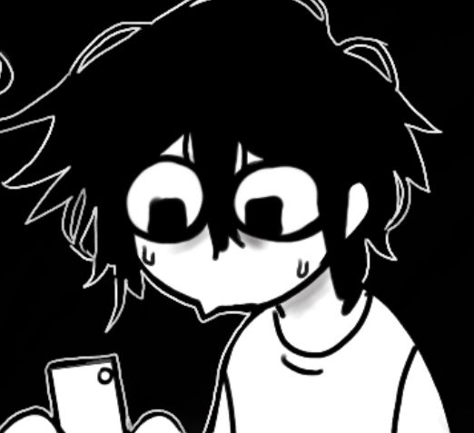

Olá, sou Anthony Gustavo Gomes Santos, estudante do 8º ano e apaixonado por tecnologia e programação. Atualmente, estou desenvolvendo meus conhecimentos em HTML, CSS, JavaScript e Python, buscando aprimorar minhas habilidades constantemente. Meu objetivo é transformar meu interesse por tecnologia em projetos cada vez mais criativos e úteis.
